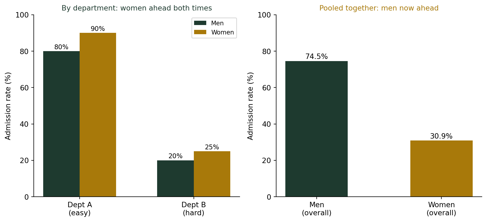

(흩어짐과 역설) 부분에서 이기고도 전체에서 지는 이유 — 심슨의 역설
통계기초
기술통계
1973년 UC버클리 대학원 입학 통계는 남성 합격률 44.2%, 여성 합격률 34.6%로 성차별 소송까지 갔다. 그런데 개별 학과별로 뜯어보니 6개 주요 학과 중 4곳에서 오히려 여성 합격률이 더 높았다. 부분에서 이기고도 전체에서 지는 이 역설의 정체를 단순화한 숫자 예시로 직접 확인한다.
학과별로는 여성이 이겼는데, 전체 합격률은 남성이 높았다
1973년 UC버클리 대학원은 12,763명의 지원자를 심사했다. 전체 합격률을 성별로 나눠보니 남성 44.2%, 여성 34.6%로 거의 10%포인트 차이가 났다. 이 정도 격차는 성차별 소송으로 이어질 만큼 심각해 보였다. 그런데 통계학자 피터 비켈(Peter Bickel)과 동료들이 학과별로 데이터를 다시 뜯어보자 이상한 일이 벌어졌다. 6개 주요 학과 중 4곳에서 여성의 합격률이 오히려 남성보다 높거나 비슷했다. 부분(학과)에서는 여성이 이기거나 비겼는데, 전체 합계에서는 남성이 크게 앞섰다. 어떻게 이런 일이 가능할까?
단순화한 숫자로 직접 확인해보자
버클리의 실제 자료는 학과가 6개가 넘어 복잡하니, 같은 원리를 두 학과짜리 단순한 예시로 재현해보자. 아래는 실제 버클리 수치가 아니라, 역설이 일어나는 메커니즘을 보여주기 위한 가상의 예시다.
| 학과 | 남성 지원 | 남성 합격 | 남성 합격률 | 여성 지원 | 여성 합격 | 여성 합격률 |
|---|---|---|---|---|---|---|
| A (쉬운 학과) | 100명 | 80명 | 80% | 10명 | 9명 | 90% |
| B (어려운 학과) | 10명 | 2명 | 20% | 100명 | 25명 | 25% |
| 합계 | 110명 | 82명 | 74.5% | 110명 | 34명 | 30.9% |
왼쪽 그래프를 보면 학과 A, 학과 B 어디서든 여성 막대가 더 높다. 그런데 오른쪽처럼 두 학과를 합쳐 전체 합격률을 계산하면 순위가 뒤집힌다. 이게 바로 심슨의 역설(Simpson’s paradox)이다. 아무도 숫자를 조작하지 않았다. 어떤 지원자의 결과도 바뀌지 않았다. 단지 어떻게 묶어서 보느냐만 바뀌었을 뿐인데, 결론이 정반대가 됐다.
역설이 일어나는 진짜 이유: 지원자 수의 쏠림
표를 다시 보면 답이 보인다. 남성은 쉬운 학과 A에 압도적으로 많이(100명) 지원했고, 여성은 어려운 학과 B에 압도적으로 많이(100명) 지원했다. 학과 A는 원래 합격률 자체가 높고(80~90%대), 학과 B는 원래 합격률 자체가 낮다(20~25%대). 그러니 학과 A에 몰린 남성 집단은 “쉬운 시험을 많이 본 덕분에” 전체 합격률이 높게 나오고, 학과 B에 몰린 여성 집단은 “어려운 시험을 많이 본 탓에” 전체 합격률이 낮게 나온다. 실제 버클리 사건에서도 결론은 같았다 — 여성 지원자들이 경쟁이 치열해 원래 합격률이 낮은 인기 학과에 상대적으로 더 많이 지원했기 때문에, 학과별로는 차별이 없었는데도(오히려 약간 유리했는데도) 전체 합계는 불리하게 나온 것이었다.
전체 합계는 사실 “가중평균”이다
전체 합격률은 단순한 평균이 아니라, 각 학과 지원자 수를 가중치로 삼은 가중평균이다. 남성의 가중치는 쉬운 학과 A에, 여성의 가중치는 어려운 학과 B에 몰려 있었기 때문에, 학과별 순위와 전체 순위가 어긋난 것이다. 두 집단이 하위 범주에 다른 비율로 분포해 있을 때, 이 역설은 언제든 나타날 수 있다.
집계 통계를 마주하면 확인할 것
- 비교하는 두 집단이 하위 범주(학과, 부서, 병원, 연령대 등)에 비슷한 비율로 분포해 있는가? 아니라면 전체 합계는 왜곡될 수 있다.
- 전체 결론과 세부 결론이 다르다면, 세부 결론을 우선 믿어라. 세부 집단 안에서는 비교 대상의 조건이 훨씬 비슷하기 때문이다.
- “이 두 집단을 가르는 제3의 변수(학과 선택, 병의 중증도, 지역 등)가 있는가”를 항상 물어라. 그 변수가 바로 역설을 일으키는 숨은 손이다.
더 깊이: 교란변수와 집계 편향
강의노트 〈기초통계학 3. 통계의 이해 — 확률 해석의 함정〉이 정리하는 “통계 해석의 주요 함정” 표에는 오늘 다룬 역설과 정확히 맞아떨어지는 두 항목이 나란히 있다. 교란변수는 “실제 원인인 제3 변수를 간과하는 것”이고, 집계 편향은 “표본 구성 변화로 인한 왜곡 — 집계 통계량이 부분 집단의 경향을 숨기는 것”이다. 오늘 버클리 사례에서 학과 선택이 바로 그 교란변수였다 — 성별과도 관련이 있고(여성이 어려운 학과에 더 많이 지원) 합격률과도 관련이 있는(학과마다 원래 난이도가 다른) 제3의 변수가 숨어 있었기 때문에, 이를 무시한 집계 통계는 실제와 반대되는 그림을 그렸다.
결론: 전체 숫자 하나만 보고 승부를 가르지 말라
나는 학생들에게 “전체 평균이 이렇다”는 뉴스나 보고서를 볼 때마다 이렇게 물으라고 말한다. “이 전체 숫자는 어떤 하위 집단들을 어떤 비율로 섞은 것인가?” 이번 주 우리는 표준편차로 흩어짐을 재고, 이상치 하나가 그 흩어짐을 얼마나 흔드는지 보고, 표준점수로 서로 다른 잣대를 하나로 맞추고, 변동계수로 단위가 다른 흩어짐을 비교했다. 오늘의 심슨의 역설은 이 모든 이야기의 마지막 경고다 — 부분과 전체가 다른 말을 할 때는, 그 차이 자체가 숨은 변수를 찾으라는 신호라는 것.
참고 자료
- Bickel, P. J., Hammel, E. A., & O’Connell, J. W. (1975). Sex bias in graduate admissions: Data from Berkeley. Science, 187(4175), 398-404.
- Simpson’s paradox — Wikipedia